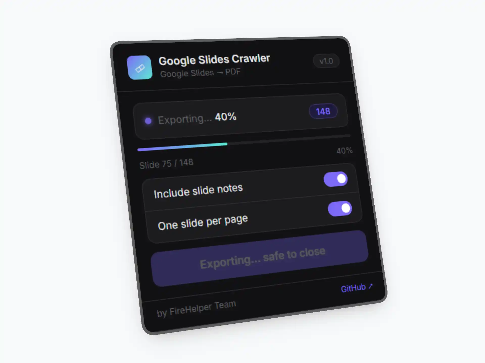

GSC - Google Slides Crawler
Bạn muốn tải Google Presentation về để tiện xem tài liệu mọi lúc mọi nơi, ngay cả khi không có mạng, nhưng chủ sở hữu lại chặn nút tải? Đừng lo, Google Slides Crawler (GSC) ra đời chính là để giúp bạn giải quyết vấn đề đó!

Google Slides Crawler (GSC) là một tiện ích mở rộng (extension) mã nguồn mở dành cho các trình duyệt dựa trên Chromium (như Chrome, Edge, Brave…).
Thay vì phải chụp màn hình từng trang một cách thủ công, GSC tự động hóa quy trình quét dữ liệu từ giao diện hiển thị của Google Slides, sau đó tái cấu trúc và xuất ra định dạng PDF. Đây là giải pháp hoàn hảo để lưu trữ tài liệu học tập từ các khóa học hoặc hội thảo mà chủ sở hữu giới hạn quyền tải xuống trực tiếp.
✨ Có gì hot?
-
Xuất nhanh với một cú nhấp chuột: Chuyển đổi slides sang PDF trực tiếp ngay trên trình duyệt.
-
Nét căng đét: Hình ảnh slide được chụp với độ phân giải cao, không lo vỡ chữ.
-
Hỗ trợ Note: Tùy chọn chèn thêm phần note của tác giả ngay dưới mỗi trang slide.
-
Định dạng thông minh: Tự động căn chỉnh theo khổ giấy A4 với văn bản ghi chú được căn lề đều hai bên (justified).
🛠️ Hướng dẫn cài đặt
Thực hiện cài đặt qua các bước sau:
-
Tải xuống tiện ích tại đây.
-
Mở trình duyệt Chrome và truy cập đường dẫn
chrome://extensions/.
(hoặcedge://extensions/nếu bạn dùng Edge) -
Bật Chế độ dành cho nhà phát triển (Developer mode) ở góc trên cùng bên phải.
-
Nhấp vào nút Tải tiện ích đã giải nén (Load unpacked) và chọn thư mục dự án bạn vừa tải về.
🚀 Cách sử dụng
Bước 1: Chuẩn bị URL
Mở bài thuyết trình Google Slides của bạn và thay đổi phần kết thúc của đường dẫn URL từ /edit... thành /htmlpresent.
Ví dụ:
- Link gốc:
.../presentation/d/1abc.../edit
- Sau khi chỉnh sửa:
.../presentation/d/1abc.../htmlpresent
Bước 2: Xuất tệp PDF
Nhấp vào biểu tượng Google Slides Crawler trên thanh công cụ tiện ích của trình duyệt. Chọn Export PDF.
Vui lòng chờ thanh tiến trình chạy xong. Tệp PDF sẽ tự động được tải xuống máy tính của bạn.
📜 Điều khoản sử dụng
Dự án này được cấp phép theo tiêu chuẩn GNU GPL v3.
-
Bạn có quyền nghiên cứu, chỉnh sửa và sử dụng mã nguồn cho mục đích cá nhân hoặc giáo dục.
-
Nghiêm cấm mọi hành vi phân phối lại vì mục đích thương mại hoặc bán phần mềm này như một sản phẩm thương mại mà không có sự cho phép rõ ràng từ FireHelper Team.
Tuyên bố miễn trừ trách nhiệm: Hãy là một người dùng văn minh! Công cụ này được tạo ra để hỗ trợ việc học tập và lưu trữ cá nhân tiện lợi hơn. Chúng tôi sẽ không chịu trách nhiệm cho bất kỳ hành vi sử dụng sai mục đích hoặc vi phạm bản quyền nội dung từ phía người dùng.
514 từ
15-04-2026 13:14